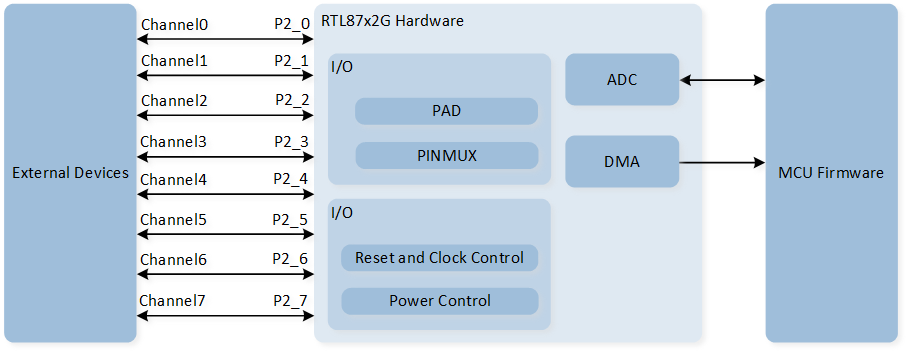
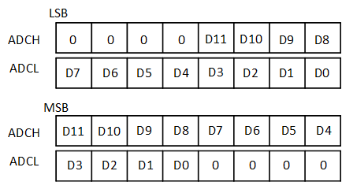

ADC
示例列表
本章介绍 ADC 示例的详细信息。RTL87x2G 为 ADC 外设提供以下示例。
功能概述
模拟多路复用器 ADC 最多有 8 个输入通道，用于模拟到数字转换。对于所有 ADC 通道，最大输入电压不得超过 VDDIO 电平。
特性列表
系统框图
ADC 的系统框图如下图所示。通过调用 MCU Firmware 固件实现 ADC 采样电压值的功能，ADC 外设获取配置的采样通道，并由 Hardware 采集对应通道的电压值。

ADC 系统框图
外部通道
RTL87x2G 支持 8 个外部通道：0、1、2、3、4、5、6 和 7 分别对应引脚 P2_0、P2_1、P2_2、P2_3、P2_4、P2_5、P2_6 和 P2_7。 RTL87x2G 支持 VBAT 内部通道。
通道模式
单端模式
单端模式占用一个通道，仅使用一个引脚进行采样。调用 API
EXT_SINGLE_ENDED将相应的 ADC 通道设置到调度表ADC_InitTypeDef::ADC_SchIndex。内部 VBAT 模式
内部 VBAT 模式用于测量 VBAT 电压。调用 API
INTERNAL_VBAT_MODE将 VBAT 通道设置到调度表ADC_InitTypeDef::ADC_SchIndex。
外部通道输入模式
Bypass Mode
ADC bypass mode 的输入范围是 0 到 0.9V。调用 API
ADC_BypassCmd()将相应通道设置为旁路模式。Divide Mode
ADC divide mode 的输入范围是 0 到 3.3V。默认设置为 divide mode。
工作模式
单次采样模式
启用 ADC 后，仅进行一次采样。如果需要再次采样，用户需要手动重新启动采样。
数据默认存储在 schedule table 中。如果将
ADC_InitTypeDef::ADC_DataWriteToFifo设置为ENABLE，则可以选择在单次模式下将数据存储在 FIFO 中。在
ADC_Cmd()API 中填写ADC_ONE_SHOT_MODE以启用 ADC 单次模式采样。可以与 TIM7 外设配合实现定时连续采样。
连续采样模式
启用 ADC 后，采样会持续进行直到 ADC 被禁用。
数据默认存储在 ADC FIFO 中。
可以与 GDMA 连续采样配合使用。
在
ADC_Cmd()API 中填写ADC_CONTINUOUS_MODE以启用 ADC 连续模式采样。
Schedule Table 索引
ADC 支持 16 个 schedule tables，每个 schedule table 支持下表中的输入参数。将下表中的参数写入 schIndex[0] ~ schIndex[15] 以设置通道模式和通道号。
然后设置 bitmap，schIndex[0] ~ schIndex[15] 对应 bitmap 的第 0 位至第 15 位。如果 bitmap 的特定位设置为 1，则表示启用该位对应的时间表。例如，如果配置 schIndex[0] 和 schIndex[1]，则 bitmap 为
0000 0000 0011（即0x0003）。Bitmap 参数通过ADC_InitTypeDef::ADC_Bitmap进行设置。使能 ADC 后，ADC 将会根据 schedule table 中配置的采样通道进行采样。
|
Description |
|---|---|
|
Single-Ended mode, the input is external channel 0. |
|
Single-Ended mode, the input is external channel 1. |
|
Single-Ended mode, the input is external channel 2. |
|
Single-Ended mode, the input is external channel 3. |
|
Single-Ended mode, the input is external channel 4. |
|
Single-Ended mode, the input is external channel 5. |
|
Single-Ended mode, the input is external channel 6. |
|
Single-Ended mode, the input is external channel 7. |
|
Internal battery voltage detection channel. |
备注
schedule 索引需要按顺序配置，顺序不能被打乱。例如仅配置 schIndex[0] 和 schIndex[2] 是不允许的，必须要配置 schIndex[0]， schIndex[1] 再到 schIndex[2]。
在单次采样模式下，将按顺序从计划 0 到 15 执行采样，禁用的 schedule 索引将不会被执行采样。
在单次采样模式下，执行完最后一个 schedule 索引后会自动停止。在连续模式下，执行完最后一个 schedule 索引后会自动循环。
ADC 采样时钟
ADC 的采样时序如图所示。

ADC Sample Period Clock
开始 ADC 采样后，开始输出 ADC 采样时钟。其中高电平表示 ADC Sample time，低电平表示 ADC Convert time。
每个 schedule 的采样周期由 Sample time 和 Convert time 组成。单次采样所需的时间即为所有已配置的 schedule 的采样时间之和。
其中 ADC Sample time 由 ADC_InitTypeDef::ADC_SampleTime 决定，具体计算公式为 (ADC_InitTypeDef::ADC_SampleTime + 1) / 10MHz。
ADC Convert time 由 ADC_InitTypeDef::ADC_ConvertTime 决定，可选择的时间分别为 500ns，700ns，900ns 和 1100ns。
ADC 数据格式
ADC 的数据由 12bits 构成。ADC 的数据存储方式支持左对齐（MSB）和右对齐（LSB），可通过 ADC_InitTypeDef::ADC_DataAlign 进行设置。
ADC 的数据存储格式如图所示：

ADC 数据格式
ADC 支持最高 256 的 Hardware Average 模式。其中数据存储格式变为 10bit 整数 + 2bit 小数。可通过 ADC_InitTypeDef::ADC_DataAvgEn 开启 Hardware Average 功能，通过 ADC_InitTypeDef::ADC_DataAvgSel 设置平均系数。
开启 Hardware Average 功能后，ADC 的数据存储格式如图所示：

ADC 数据格式 - 开启 Hardware Average 功能
ADC GDMA
当 ADC 在 Continuous Mode 下采样时，数据会默认储存在 ADC FIFO 中，可以通过 GDMA 将 ADC FIFO 内的数据搬运到 Memory 中。
当 ADC FIFO 内数据的数量大于等于初始化中设置的 ADC_InitTypeDef::ADC_WaterLevel 时，会触发一次 GDMA burst 搬运。
GDMA 一次 burst 会从 ADC FIFO 中获取 GDMA_InitTypeDef::GDMA_SourceMsize 个数据。
ADC GDMA 传输时，推荐设置 ADC_InitTypeDef::ADC_WaterLevel 的值为 MSize 。

ADC GDMA 示意图